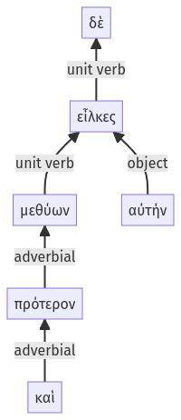

Lysias, Oration 1, 1.12.51-1.12.56a
1.12.35-1.12.50a | 1.12.57-1.13.14a
Sentence 28
1.12.51-1.12.56a
καὶ πρότερον δὲ μεθύων εἷλκες αὐτήν".
2 καὶ πρότερον μεθύων
1 εἷλκες αὐτήν
καὶ πρότερον δὲ μεθύων εἷλκες αὐτήν".
Highlighting:
- connecting words
- unit verb
- subject
- object
Color code:
- Independent clause (level 1, transitive verb)
- circumstantial participle (level 2, intransitive verb)
